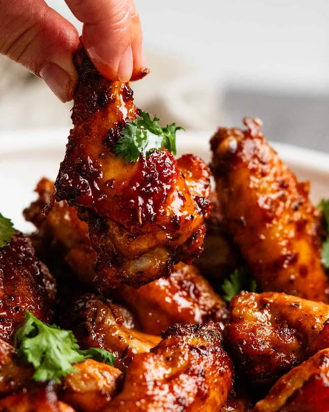

New Orleans Wings

Ingredients
- Brown Sugar
- Garlic
- Butter
- Paprika
- Onion Powder
- Garlic Powder
- Thyme
- Oregano
- Cayenne
- Salt & pepper
- Chicken Wings
Steps
- Mix the melted butter and minced garlic together. I use a garlic crusher - easy and makes the garlic “pasty” which is ideal for blending into butter.
If you don't have a garlic press, finely mince with a knife, or if you want to really impress me, smear it into a paste with the side of your knife!
- Mix all the spices, salt, pepper and sugar in a bowl.
It looks like a lot, thanks to the sugar. We want a lot - so we can thoroughly coat all the wings!
- Here's the order in which I toss the wings for the most even coating: half the seasoning, toss, remaining seasoning, toss, garlic butter, toss.
The seasoning is everything. Nobody wants to land the wing that's not properly coated with the spice mix!
- Spread the wings out on a lined tray large enough so they are in a single layer with a bit of space between them
If they are more crowded, then the tray juices may stay watery rather than reducing.
- Bake for 45 minutes (small wings) to 50 minutes (regular /large wings, pictured) until golden, basting at the 30 minute and 40 minute mark.
The wings are baked at 200°C/390°F (180°C fan-forced). A little higher than usual, to get good colour on them. Colour = flavour!
- To baste, squidge a brush into the tray juices and generously brush / dab onto the surface of the wings.
This is key for getting really good flavour on the wings, so baste generously!
- Once the wings are done (45 - 50 minutes), give them one last baste (this is the most important one because the tray juices should be caramelised by now).
Pile into a bowl or on a plate, then pour all the tray juices over. Sprinkle with something green if you're feeling fancy (coriander/cilantro, parsley or green onion) then dig in!